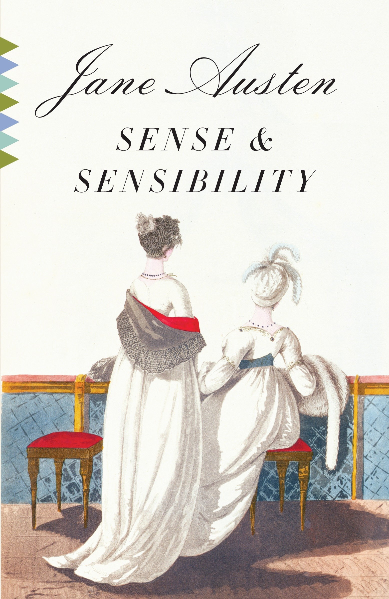

Sense and Sensibility (1811)
Synopsis
Sense and Sensibility is a novel by Jane Austen, and was her first published work when it appeared in 1811 under the pseudonym "A Lady." A work of romantic fiction, better known as a comedy of manners, Sense and Sensibility is set in southwest England, London and Kent between 1792 and 1797, and portrays the life and loves of the Dashwood sisters, Elinor and Marianne. The novel follows the young ladies to their new home, a meagre cottage on a distant relative's property, where they experience love, romance and heartbreak. The philosophical resolution of the novel is ambiguous: the reader must decide whether sense and sensibility have truly merged.
Download PDF